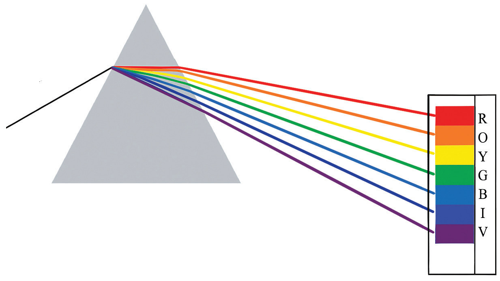

Colours of light
The major source of light for the Earth is the Sun. What is the colour of sunlight? Sometimes we see in the sky a rainbow consisting of different colours. In addition, during sunset or sunrise, the sky appears orange or red. Can we conclude from these observations that sunlight is made of different colours?
Dispersion of white light
White light is known to consist of seven colours. If a beam of white light is passed through a triangular glass prism, it splits into a band of seven colours. Figure 5.16 shows a band of colours formed when white light passes through a triangular glass prism. This band is known as the spectrum of white light. Colours that form the spectrum of white light are red (R), orange (O), yellow (Y), green (G), blue (B), indigo (I) and violet (V). For the sake of remembering the arrangement of these colours, an abbreviation ROYGBIV is commonly used.

Dispersion of light is a phenomenon in which white light splits into its colour components upon passing through a medium such as a triangular glass prism. This phenomenon happens because when a beam of white light enters a transparent medium, each colour component is refracted at a different angle of refraction, resulting in different angles of deviation. For example, red colour deviates least while violet colour deviates most. The result is the splitting of the white light into its components to form a spectrum with red colour being at the upper part of the spectrum, and the violet colour being at the bottom of the spectrum, as shown in Figure 5.16. Each component has a different wavelength, which falls well within the visible part of the electromagnetic spectrum.
Rainbow
Light dispersion can also occur when light passes through other transparent materials, such as water droplets and soap bubbles. One consequence of light dispersion by water droplets in the atmosphere is the formation of a rainbow. A rainbow is a natural phenomenon caused by the dispersion of white light. It is caused by the refraction and reflection of white light by falling water droplets.